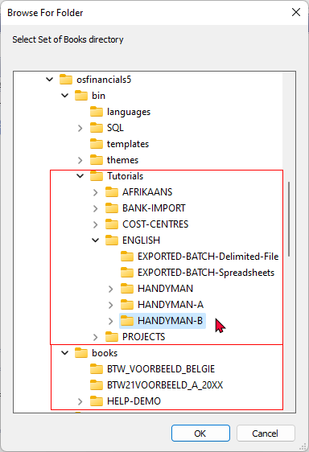

Help
Launches the context-sensitive Help file. You may press F1 to launch the help file from most screens and fields to launch the topic relating to that screen or field. This help system is designed to assist users in understanding and navigating the osFinancials5/TurboCASH5 accounting software, as well as to provide guidance on accounting principles and practices.


books
The Set of Books in this directory, is installed when installing osFinancials5/TurboCASH5, is HANDYMAN which will open in the English language.
Tutorials
Tutorial Sets of Books, will be installed in the "bin / Tutorials" directory. To follow these tutorials, you need to click on the Browse icon (of the Open Set of Books screen) and select the Sets of Books tutorials.

ENGLISH
English tutorials (using the default payments and receipt batches for banking / cash transactions):
The following Set of Books based on this tutorial, is installed in the “…\bin\Tutorials\ENGLISH\” folder:
- HANDYMAN (No transactions)
- HANDYMAN-A (Unposted)
- HANDYMAN-B (Posted)
|
|
The following folders contains files which may be imported into batches:
|

BANK-IMPORT Plugin - English tutorials
English tutorials (using the BankImport plugin for banking / cash transactions):
The following Set of Books based on this tutorial, is installed in the “…\bin\Tutorials\BANK-IMPORT\” folder:
- HANDY-BANK (No transactions).
- HANDY-BANK-A (Unposted transactions in batches and documents, except the Payments and Receipt batches, which is cleared for the Bank account and the Petty cash).
- HANDY-BANK-B (Posted transactions in batches and documents, including the imported bank statement and processed Petty cash transactions).
- HANDY-BANK-UNPOSTED-BANK-STATEMENT – All transactions in batches and documents have been posted. The sample Bank statement in the “…\bin\Tutorials\BANK-IMPORT\BANK-STATEMENTS” folder needs to be imported and Petty cash transactions needs to be processed).
AFRIKAANS
The following Set of Books based on the Afrikaans tutorial, is installed in the “…\bin\Tutorials\AFRIKAANS\” folder.
- NUTSMAN (No transactions).
- NUTSMAN-A (Unposted)
- NUTSMAN-B (Posted).
COST-CENTRES
Tutorials / examples to explore the activation, processing and reporting of Cost centres in osFinancials5/TurboCASH5. See - Cost centres in this Help file.
The following Set of Books based on this tutorial, is installed in the “…\bin\Tutorials\COST-CENTRES\” folder:
- COST-CENTRES-A (transactions and documents not posted to the ledger)
- COST-CENTRES-B (transactions and documents posted to the ledger).
PROJECTS
Tutorials / examples to explore the activation, processing and reporting of Projects in osFinancials5/TurboCASH5. See - Projects in this Help file.
The following Set of Books based on this tutorial, is installed in the “…\bin\Tutorials\PROJECTS\” folder:
- PROJECTS-A (transactions and documents not posted to the ledger)
- PROJECTS-B (transactions and documents posted to the ledger).